측량및지형공간정보기사 (2017-09-23 기출문제)
1과목: 측지학 및 위성측위시스템
1. 중력의 영년변화(secular variation) 원인과 거리가 먼 것은?
- 대기 물질의 변화
- 만유인력상수의 변동
- 지구의 형상과 질량의 변화
- 지구 전체적인 질량분포의 일반적인 변동
(정답률: 67%)

2. GNSS 신호가 대기권을 통과할 때의 현상으로 옳은 것은?
- 일반적으로 전리층지연 효과가 대류층지연 효과보다 작게 나타난다.
- 이중주파수 수신데이타를 이용하면 전리층지연 효과의 제거가 가능하다.
- 대기에 포함되어 있는 수증기량은 지연효과에 영향을 주지 않는다.
- 대기 중에 있는 질소나 산소는 신호지연에 영향을 주지 않는다.
(정답률: 71%)
3. 탄성파를 이용하여 파악하는 주요 사항으로 옳은 것은?
- 지표상 두 점간 거리의 정밀 측정
- 인공위성을 이용한 지구상 점의 좌표 측정
- 지질구조의 파악
- 파고의 측정
(정답률: 80%)
4. GNSS 자료처리에 의하여 직접적으로 획득할 수 있는 성과가 아닌 것은?
- 기선장
- 경도
- 위도
- 정표고
(정답률: 67%)
5. GNSS 측량에 있어 기준점 선점을 위한 고려사항과 가장 거리가 먼 것은?
- 인접 기준점과 시통이 잘되는 지점 선정
- 전파의 다중경로 발생 예상지점 회피
- 임계 고도각 유지 가능 지역 선정
- 주파수 단절 예상지점 회피
(정답률: 66%)
6. 실측된 중력값을 기준면의 값으로 보정하는 중력보정에 해당되지 않는 것은?
- 지형보정
- 방사보정
- 고도보정
- 부게보정
(정답률: 64%)
7. GNSS 측량에서 수평 측위 정밀도와 관련되는 위성의 정도 저하율(DOP)은?
- PDOP
- TDOP
- HDOP
- VDOP
(정답률: 77%)
8. GNSS 측위의 계통적 오차(정오차) 요인이 아닌 것은?
- 위성의 시계오차
- 위성의 궤도오차
- 전리층 지연오차
- 관측 잡음오차
(정답률: 80%)
9. 지구좌표계에서 위성의 위치와 속도를 결정하기 위해 일반적으로 이용하는 궤도력이 아닌 것은?
- 천체력(또는 개략력)
- 정밀력
- 율리우스력
- 방송궤도력
(정답률: 78%)
10. 자기 폭풍의 주요 원인으로 옳은 것은?
- 달의 공전
- 태양면의 폭발
- 해양 지각 변동
- 지구 내부 물질의 분포
(정답률: 66%)
11. 지구의 적도 반지름 a=6,375km, 극 반지름 b=6,350km라고 할 때 지구의 편평률은?
- 1/310
- 1/290
- 1/280
- 1/255
(정답률: 74%)
12. UTM 좌표계에 대한 설명으로 옳은 것은?
- 각 구역은 서쪽방향으로 10°간격으로 1부터 번호를 붙인다.
- 지구 전체를 경도 6°씩 60구역으로 나눈다.
- 위도는 6° 간격으로 남북으로 20등분하여 나눈다.
- 위도 80° 이상의 양극지역의 좌표를 표시하기 위한 좌표계이다.
(정답률: 72%)
13. 평균표고가 700m인 두 점의 거리가 3,000.902m라면 이 두 점에 대한 평균해수면 상의 거리는? (단, 지구는 반지름 R=6,370km인 구로 가정)
- 3,000.572m
- 3,000.525m
- 3,000.180m
- 2,999.098m
(정답률: 51%)
14. 다음 설명 중 옳지 않은 것은?
- 측지학은 지구내부의 특성, 지구의 형상 및 운동을 결정하는 측정과 지구표면상 점간의 위치관계를 선정하는 측량에 기본이 되는 학문이다.
- 지각변동의 측정, 항로 등의 측량은 평면측량으로 한다.
- 측지측량은 지구의 곡률을 고려한 정밀한 측량이다.
- 측지학은 물리학적 측지학과 기하학적 측지학으로 구분할 수 있다.
(정답률: 75%)
15. 지구 전체를 하나의 단일 좌표계로 표시하고자 할 때 매우 편리한 좌표계로서 인공위성에 의한 지구상의 위치 결정에 사용되는 좌표계는?
- 국제평면직각좌표
- 3차원 직각좌표
- 평면직각좌표
- 극좌표
(정답률: 55%)
16. GPS 위성신호에 대한 설명으로 틀린 것은?
- GPS의 반송파에는 L1 반송파와 L2 반송파가 있다.
- 모든 GPS 위성은 똑같은 주파수로 전파를 송신한다.
- L1 반송파에는 C/A코드와 P코드가 탑재되어 있다.
- L2 반송파에는 정밀궤도력 정보가 포함되어 있다.
(정답률: 45%)
17. 나침반의 침로를 일정하게 유지하였을 때 항적은 그 선내의 어느 곳에서든 항상 자오선에 대해 일정한 방위각을 갖는 선형이 되는데 이를 무엇이라 하는가?
- 측지선
- 묘유선
- 항정선
- 연직선
(정답률: 76%)
18. 지역타원체와 세계타원체 간와 3차원 좌표변환과 관련이 없는 것은?
- Transverse Mercator 방법
- 표준 Molodensky 변환방법
- Molodensky-Badekas 모델에 의한 7변수
- Bursa-Wolf 모델에 의한 7변수
(정답률: 56%)
19. 지표면상의 구면 삼각형 △ABC 의 세 각을 관측한 결과 ∠A＝51°30ʹ, ∠B＝65°35ʹ, ∠C＝64°25ʹ 이었다면 구면 삼각형의 면적은? (단, 지구반지름 R=6,350km이며, 측각오차는 없는 것으로 가정한다.)
- 1,⑤5,640.6km2
- 1,269,987.6km2
- 1,298,366.4km2
- 1,596,427.4km2
(정답률: 66%)
20. GNSS 측량 방법 중 <보기>가 설명하고 있는 방법은?
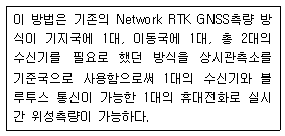
- DGPS
- SLR
- Pseudo Kinematic
- VRS
(정답률: 76%)
2과목: 응용측량
21. 노선측량의 순서로 옳은 것은?
- 답사→예측→실측→공사측량→도상계획
- 도상계획→실측→예측→답사→공사측량
- 도상계획→답사→예측→실측→공사측량
- 답사→도상계획→실측→예측→공사측량
(정답률: 74%)
22. 터널의 준공을 위한 변형조사측량과 가장 거리가 먼 것은?
- 중심측량
- 고저측량
- 단면측량
- 삼각측량
(정답률: 64%)
23. 터널측량의 순서로 옳은 것은?
- 예측 - 답사 - 지표설치 - 지하설치
- 예측 - 지하설치 - 지표설치 – 답사
- 답사 - 지표설치 - 지하설치 - 예측
- 답사 - 예측 - 지표설치 - 지하설치
(정답률: 58%)
24. 노선측량 중 편각법에 의한 원곡선 설치에 있어서 필요 없는 요소는?
- 시단현(l1)
- 중앙종거(M)
- 곡선반지름(R)
- 종단현에 대한 편각(δn)
(정답률: 67%)
25. 해저면 영상조사(Side San Sonar)의 활용분야가 아닌 것은?
- 심부 지층 조사
- 인공 어초 조사
- 해저 케이블 조사
- 수중 이상체 조사
(정답률: 49%)
26. 설계도나 시방서에 따라 시공에 필요한 점의 위치나 경사를 현지에 측설하는 측량작업은?
- 공사측량
- 계획조사측량
- 실시설계측량
- 준공측량
(정답률: 48%)
27. 그림과 같이 폭 200m의 하천이 있어서 P 및 Q에 레벨을 세우고 교호 수준 측량을 하였다. A점으로부터 D점까지의 각 측점에서 전후 표척의 표고차가 표와 같을 때, D점의 표고는? (단, A점의 표고＝2.545m)
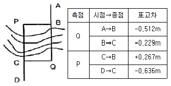
- 2.401m
- 2.411m
- 2.421m
- 2.431m
(정답률: 47%)
28. 정사각형으로 조성 계획인 부지에서 가로를 2m 짧게 하고 세로를 8m 길게 하여 면적을 측정한 결과 600m2이었다면 원계획에 따른 정사각형 부지의 한 변의 길이는?
- 8m
- 12m
- 18m
- 22m
(정답률: 60%)
29. 그림은 사각형 격자의 교점에서 절토고이다. 절토량은 얼마인가? (단, 구역의 크기는 가로 20m, 세로 10m로 동일하다.)
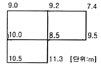
- 1,357m3
- 2,424m3
- 5,580m3
- 6,530m3
(정답률: 56%)
30. 그림과 같이 수직 터널로에서 고저측량을 행하는 경우 지하 B점의 표고는? (단, 지상 A점의 표고는 72.38m이다.)
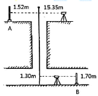
- 57.73m
- 58.15m
- 58.95m
- 61.53m
(정답률: 63%)
31. 지하시설물 측량에 관한 설명으로 옳지 않은 것은?
- 지표면상에 노출된 지하시설물은 측량하지 않는다.
- 지하시설물의 위치, 깊이, 서로 떨어진 거리 등을 측량한다.
- 지하시설물에 대한 탐사간격은 20m 이하로 한다.
- 지하시설물이란 상ㆍ하수도, 가스, 통신 등을 위해 지하에 매설된 시설물을 의미한다.
(정답률: 75%)
32. 어떤 기간 동안의 수위 중 이것보다 높은 수위와 낮은 수위의 관측횟수가 같은 수위를 나타내는 것은?
- 평수위
- 평균수위
- 평균고수위
- 평균저수위
(정답률: 55%)
33. 수평 및 수직거리를 동일한 정확도로 관측하여 9,000m3의 체적을 정확히 산출하려고 한다. 체적오차를 ±0.9m3 이하로 하기 위한 거리관측의 최대 허용 정밀도는?
- 1/100000
- 1/90000
- 1/30000
- 1/10000
(정답률: 56%)
34. 지적측량 중에서 도시계획, 농지개량 등에 의해 토지를 구획 정리하기 위해 실시되는 측량으로 세부측량에서도 정확하게 실시되는 측량은?
- 지적 확정 측량
- 경계 정정 측량
- 경계 감정 측량
- 분할 측량
(정답률: 68%)
35. 일반철도에서 직선과 곡선사이에 삽입되는 완화곡선의 식으로 가장 적합한 것은?
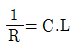
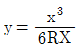
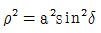
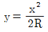
(정답률: 60%)
36. 곡선반지름 300m, 교각 45°인 원곡선의 곡선길이는?
- 235.62m
- 249.32m
- 270.66m
- 290.34m
(정답률: 54%)
37. 하천의 유량조사를 위한 수위관측소의 위치선정시 고려사항에 대한 설명으로 틀린 것은?
- 유로 및 하상 변동이 적은 곳이어야 한다.
- 흐름과 유속의 변화가 뚜렷이 나타나야 한다.
- 홍수 등에 의한 유실, 이동 및 파손의 위험이 없어야 한다.
- 교각이나 기타 구조물에 의하여 수위에 영향을 받지 않아야 한다.
(정답률: 69%)
38. 면적산정법을 계산 방법에 따라 수치계산법과 도해법으로 구분할 때 수치계산법에 해당되지 않는 것은?
- 심사법
- 단면법
- 방안법
- 좌표법
(정답률: 64%)
39. 그림과 같이 2중 부자를 이용하여 관측하고자 할 때 평균유속을 직접 관측하기 위해서 수면에 있는 부자와 수중에 있는 부자간의 간격(ℓ)으로 적당한 길이는?
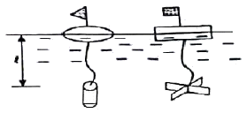
- 수심의 20% 깊이
- 수심의 40% 깊이
- 수심의 50% 깊이
- 수심의 60% 깊이
(정답률: 68%)
40. 클로소이드의 매개변수 A=60m이고, 곡선길이가 40m인 클로소이드 곡선의 반지름은?
- 60m
- 90m
- 120m
- 150m
(정답률: 65%)
3과목: 사진측량 및 원격탐사
41. 상호표정에 대한 설명으로 옳은 것은?
- 평면(x, z)방향 시차를 소거하는 것
- 높이(z)방향 시차를 소거하는 것
- 횡(x)방향 시차를 소거하는 것
- 종(y)방향 시차를 소거하는 것
(정답률: 61%)
42. 수동적 감지기(passive sensor) 중 지표로부터 반사되는 전자기파를 렌즈와 반사경으로 집광하여 필터를 통해 분광한 다음 파장별로 구분하여 각각의 영상을 기록하는 감지기는?
- INS
- PAN
- MSS
- SAR
(정답률: 62%)
43. 지형적 조건이 동일하고 항공사진의 축척이 같을 때 기복변위량이 가장 작게 나타나는 사진은?
- 보통각사진
- 광각사진
- 초광각사진
- 경사사진
(정답률: 55%)
44. 다음 중 조정집성 영상지도 제작에 가장 적합한 영상(사진)은?
- 경사사진
- 초광각사진
- 파노라믹사진
- 정사사진
(정답률: 65%)
45. 사진측량의 특징에 대한 설명으로 틀린 것은?
- 지상측량보다 정확도가 월등히 높다.
- 정량적 및 정성적 측정이 가능하다.
- 축척이 작을수록 경제적이다.
- 분업화에 따라 능률적이다.
(정답률: 60%)
46. 지역 1, 2, 3에 대해서 LANDSAT-7의 3번과 4번의 밴드의 화소값을 구한 결과가 표와 같다. 각 지역의 정규화식생지수(NDVI)로 옳은 것은?
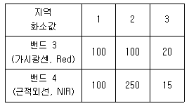
- 지역 1＝0, 지역 2＝0.43, 지역 3＝－0.14
- 지역 1＝0, 지역 2＝－0.43, 지역 3＝0.14
- 지역 1＝1, 지역 2＝2.5, 지역 3＝0.75
- 지역 1＝1, 지역 2＝0.44, 지역 3＝1.33
(정답률: 52%)
47. 항공사진의 수치영상을 이용한 상호표정시 입체영상에서 공액점을 자동으로 측정하기 위해 사용되는 기법은?
- 영상 모자이크
- 영상접합
- 보간법
- 편위수정
(정답률: 48%)
48. 촬영스트립의 길이가 4km라고 하면 몇 매의 사진을 촬영해야 하는가? (단, 사진축척 1：10000, 종중복도 60%, 사진크기 21cm× 21cm)
- 4매
- 5매
- 6매
- 7매
(정답률: 53%)
49. 초점거리 150mm, 사진의 크기 23cm×23cm의 카메라를 사용하여 촬영고도 4,500m에서 촬영된 평지의 연직사진이 있다. 1：25000 지형도 상에서 서로 이웃하는 두 사진의 주점간 거리가 96.6mm이었다면 사진의 종중복도는?
- 55%
- 60%
- 65%
- 70%
(정답률: 49%)
50. 항공삼각측량의 조정방법으로 사진을 기본단위로 하며 정확도가 가장 높은 것은?
- 다항식조정법(Polynomial Adjustment)
- 광속조정법(Bundle Adjustment)
- 독립모형법(Independent Model Triangu- lation)
- 부등각사상변환법(Affine Transformation)
(정답률: 56%)
51. 항공사진과 지도의 투영에 대한 설명으로 옳은 것은?
- 항공사진은 중심투영, 지도는 정사투영이다.
- 항공사진은 정사투영, 지도는 중심투영이다.
- 항공사진과 지도는 모두 중심투영이다.
- 항공사진과 지도는 모두 정사투영이다.
(정답률: 66%)
52. 초점거리 152mm인 카메라를 이용하여 2°의 경사로 평지를 촬영한 항공사진이 있다. 이 항공사진의 최대 경사선 상에서 등각점과 연직점 간의 깊이는?
- 2.0mm
- 2.4mm
- 2.7mm
- 4.8mm
(정답률: 55%)
53. 다음의 측량기법(장비) 중 야간에는 자료획득이 불가능한 것은?
- LIDAR
- GPS
- MSS
- SAR
(정답률: 57%)
54. 입체사진측량에서 입체상의 변화에 대한 설명으로 옳지 않은 것은?
- 눈의 위치가 약간 높아짐에 따라 입체상은 더 높게 보인다.
- 렌즈의 초점거리가 긴 쪽의 사진이 짧은 쪽의 사진보다 더 낮게 보인다.
- 입체상은 촬영기선이 긴 경우가 촬영기선이 짧은 경우보다 더 낮게 보인다.
- 낮은 촬영고도로 촬영한 사진이 높은 고도로 촬영한 경우보다 더 높게 보인다.
(정답률: 47%)
55. 카메라 중 동일한 촬영고도에서 촬영했을 때 가장 많은 대상물을 포함할 수 있는 카메라는?
- 협각카메라
- 보통각카메라
- 광각카메라
- 초광각카메라
(정답률: 69%)
56. 원격탐사의 일반적인 영상처리 순서로 옳게 나열된 것은?
- 데이터 입력→변환처리→전처리→분류처리→출력
- 데이터 입력→전처리→변환처리→분류처리→출력
- 데이터 입력→분류처리→변환처리→전처리→출력
- 데이터 입력→분류처리→전처리→변환처리→출력
(정답률: 55%)
57. 시간에 대한 함수를 주파수에 대한 함수로 변환하는 선형변환의 일종으로 널리 사용되는 영상변환 방법은?
- 푸리에(Fourier) 변환
- 호텔링(Hotelling) 변환
- 특성(Character) 변환
- 월쉬(Walsh) 변환
(정답률: 68%)
58. 고도 1,000m에서 축척 1：20000으로 촬영된 편위수정 사진이 있다. 지상 연직점으로부터 600m 떨어진 곳에 있는 비고(比高) 100m인 산 정상의 기복 변위는?
- 2mm
- 3mm
- 6mm
- 10mm
(정답률: 42%)
59. 수치영상을 1개 화소(pixel)의 지상면적을 뜻하는 용어로 1개 화소의 실제 크기를 의미하는 것은?
- 공간 해상도
- 주기 해상도
- 방사 해상도
- 분광 해상도
(정답률: 67%)
60. 다음 중 절대표정요소를 구할 수 있는 경우는?
- 동일 직선상에 위치한 5개의 수직기준점
- 동일 직선상에 위치한 3개의 수평기준점
- 동일 직선상에 위치하지 않은 5개의 수직기준점
- 동일 직선상에 위치하지 않은 4개의 3차원 지상기준점
(정답률: 54%)
4과목: 지리정보시스템
61. 공간 및 속성 정보의 시공간적인 변화에 대한 질의, 분석, 시각화와 이를 통한 시공간 변화 추정 및 활용이 가능한 지리정보시구템(GPS) 분야는?
- Web GIS
- Business GIS
- Temporal GIS
- Enterprise GIS
(정답률: 55%)
62. 티센(Thiessen) 다각형에 대한 설명으로 옳지 않은 것은?
- 버퍼분석에 의해 나오는 다각형을 말한다.
- Voronoi 다각형이라고도 하며, 공간보간법의 일종이다.
- 다각형 내의 모든 위치에서 다각형이 포함하는 점까지의 거리가 가장 가깝도록 설정된다.
- 이차원의 공간에서 특정 지점과 가장 인접한 지점의 속성값을 이용하여 속성값을 추정한다.
(정답률: 41%)
63. 수치지도의 등고선 레이어를 이용하여 수치표고모델(DEM)을 생성할 경우 필요한 방법은?
- 보간법
- 일반화 기법
- 분류법
- 자료압축법
(정답률: 58%)
64. 지리정보시스템(GIS)의 자료처리 및 구축을 위한 일반적인 작업과정을 순서대로 나열한 것은?
- 자료수집 - 자료입력 - 자료처리 - 자료조작 및 분석 - 출력
- 자료수집 - 자료조작 및 분석 - 자료처리 - 자료입력 - 출력
- 자료입력 - 자료수집 - 출력 - 자료처리 - 자료조작 및 분석
- 자료입력 - 자료수집 - 자료조작 및 분석 - 자료처리 - 출력
(정답률: 55%)
65. 지리정보시스템(GIS)에서 속성값을 이용한 조건 검색 중 2015년도 인구수가 4,000명이상, 5,000명 이하인 지역을 검색하기 위한 조건식으로 옳은 것은? (단, 2015년도 인구수 필드 이름：pop2015)
- (pop2015 >4,000) or (pop2015 < 5,000)
- (pop2015 > 4,000) not (pop2015 < 5,000)
- (pop2015 > 4,000) xor (pop2015 < 5,000)
- (pop2015 > 4,000) and (pop2015 < 5000)
(정답률: 58%)
66. 1：1000 수치지도를 만든 후, 데이터의 정확도검증을 위해 10개의 지점에 대해 수치지도상에서 측정한 좌표와 현장에서 검증한 좌표의 오차 크기가 아래와 같을 때 위치정확도(RMSE)는?
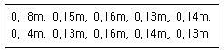
- ±0.09m
- ±0.11m
- ±0.13m
- 0.15m
(정답률: 44%)
67. 래스터데이터에 대한 설명으로 옳지 않은 것은?
- 자료구조가 간단하여 중첩 분석에 유리하다.
- 벡터데이터를 래스터데이터로 변환시 공간적 부정확성 이 증대된다.
- 셀 단위로 저장 및 관리되기 때문에 출력의 품질이 우수하다.
- 부분의 항공 및 위성영상은 래스터데이터로 취득 및 제공된다.
(정답률: 54%)
68. 도형자료의 점, 선, 면, 위치 등에 대하여 양이나 크기와 관계없이 형상이나 공간적 위치관계를 규정하는 것을 무엇이라고 하는가?
- 위상설정
- 위치설정
- 종속설정
- 도형설정
(정답률: 65%)
69. 지리정보시스템(GIS)의 공간분석 기능 중 속성이 같을 때 폴리곤의 경계선을 제거하여 하나의 폴리곤으로 생성시켜주는 것은?
- Merge
- CliP
- Dissolve
- Intersect
(정답률: 58%)
70. 특정 목적을 위해 특정한 속성의 크기를 관측단위로 하며 면적, 거리 및 방향의 왜곡은 고려하지 않고 제작하는 지도는?
- 기복도(Relief map)
- 통계지도(Cartogram)
- 유선도(Flow map)
- 지형도(Topographic map)
(정답률: 59%)
71. 논리연산(AND) 처리 후 ㉠∼㉣의 결과값을 순서대로 바르게 표시한 것은?
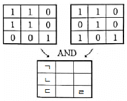
- 0-1-0-0
- 0-1-0-1
- 1-0-1-0
- 1-0-0-1
(정답률: 71%)
72. 표와 같은 위상구조 테이블에 적합한 데이터는?
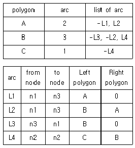
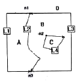
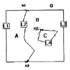
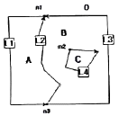
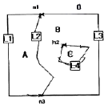
(정답률: 59%)
73. 위성영상의 전반에 걸쳐 불규칙한 잡음(speckle noise)이 발생하여 이를 보정하고자 할때, 다음 중 가장 적합한 방법은?
- 밴드간 비연산처리
- 공간 필터링
- 히스토그램 확장
- 주성분 분석 변환
(정답률: 64%)
74. 토지 이용, 개발, 행정, 다목적 지적 등 토지자원에 관련된 문제 해결을 위한 정보 분석체계는?
- 환경정보체계(EIS)
- 토지정보체계(LIS)
- 위성측위체계(GNSS)
- 시설물관리체계(FM)
(정답률: 73%)
75. 지리정보시스템(GIS)의 자료형식에 관한 설명으로 틀린 것은?
- 래스터 자료형식은 위상관계가 정의되지 않는다.
- 벡터 자료형식은 점, 선, 면으로 구성되어 있다.
- 벡터 자료형식에서 선과 면 데이터는 반드시 폐합되어야 한다.
- 래스터 자료형식의 자료압축방법에는 chain code, run-length code 등이 있다.
(정답률: 49%)
76. 지리정보시스템(GIS)에서 커버리지(coverage) 또는 레이어(layer)에 대한 설명으로 틀린 것은?
- 단일주제와 관련된 데이터 세트를 의미한다.
- 공간자료와 속성자료를 갖고 있는 수치지도를 의미한다.
- 균등한 특성을 갖는 래스터정보의 기본요소를 의미한다.
- 하나의 인공위성 영상에 포함되는 지상의 면적을 의미하기도 한다.
(정답률: 36%)
77. 공간분석의 유형 중 속성자료 분석과정에서 A, B 과정으로 알맞은 것은?
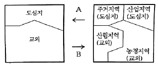
- A：일반화, B：세분화
- A：세분화, B：일반화
- A：교차화, B：세분화
- A：세분화, B：교차화
(정답률: 80%)
78. 사용자의 특정 요구에 적합하도록 지도를 디자인하는 과정과 거리가 먼 것은?
- selection(취사선택)
- classification(분류)
- globalization(세계화)
- symbolization(부호화)
(정답률: 63%)
79. 지리정보시스템(GIS)의 가장 기본적인 구성요소와 거리가 먼 것은?
- 데이터베이스
- 소프트웨어
- 하드웨어
- 네트워크
(정답률: 62%)
80. 다음이 공통적으로 설명하는 단어는?
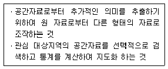
- 공간분석
- 네트워크분석
- 위상분석
- 통계분석
(정답률: 59%)
5과목: 측량학
81. 그림의 다각측량에서 측선 CD의 방위각은?
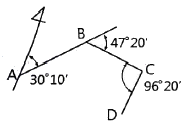
- 173°50ʹ
- 161°10ʹ
- 159°40ʹ
- 157°30ʹ
(정답률: 60%)
82. 삼각형의 내각을 서로 다른 경중률(P)로 관측하여 다음과 같은 결과를 얻었다. ∠A의 최확값은?
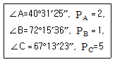
- 40°31ʹ18ʺ
- 40°31ʹ20ʺ
- 40°31ʹ22ʺ
- 40°31ʹ24ʺ
(정답률: 32%)
83. 다각측량을 통한 결과에 대한 설명으로 옳지 않은 것은?
- 방위각 330°, 거리 100m에 대한 경거의 값은 -50m이다.
- 위거, 경거의 오차가 각각 3cm, 4cm일 때 폐합오차는 5cm이다.
- 측선 총거리가 100m 폐합오차 0.⑤m일 때 정확도는 1/3000이다.
- 각 측정의 정확도가 같을 때에는 오차를 각의 크기에 관계없이 동일하게 배분한다.
(정답률: 51%)
84. 수준측량에서 5m 표척 상단이 후방으로 30cm기울어져 있다. 표척의 읽음값이 4m이었다면 이 관측값에 대한 오차는?
- 약 0.7cm
- 약 1.5cm
- 약 3.0cm
- 약 6.0cm
(정답률: 32%)
85. 평균제곱근 오차에 대한 설명으로 틀린 것은?
- 잔차의 제곱을 산술평균한 값의 제곱근
- 독립관측값인 경우에는 분산의 제곱근
- 표준편차와 같은 의미로 사용
- 밀도함수 전체의 99.7% 범위
(정답률: 53%)
86. 수준측량에 사용되는 용어에 대한 설명으로 옳은 것은?
- 전시는 전후의 측량을 연결할 때 사용한다.
- 후시는 기지의 측점에 세운 표척의 읽음값이다.
- 기계고는 지면에사부터 망원경 중심까지의 높이이다.
- 수준면은 각 측점에서 지오이드면과 직교하 모든 점을 잇는 곡면이다.
(정답률: 55%)
87. 조정이 복잡하고 포괄면적이 적으며 시간이 많이 요구되는 단점이 있으나 정확도가 가장 높은 삼각망은?
- 단열삼각망
- 유심삼각망
- 결합삼각망
- 사변형삼각망
(정답률: 67%)
88. 그림과 같이 삼각형에서 A점과 B점의 좌표가 각각 (1,000m, 1,000m), (1,400m, 1,500m)이고 a=1,500.00m, b=1,200.00m일 때, 삼변측량을 위한 관측방정식으로 옳은 것은?
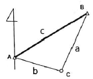
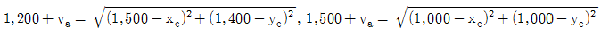
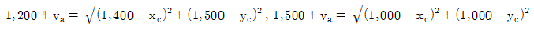
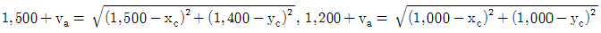
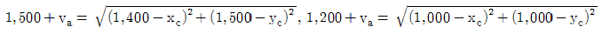
(정답률: 35%)
89. 한 측점에서 7개의 방향선 사이의 각을 각관측법(조합각 관측법)으로 관측하였다. 이때 총 각관측수는?
- 12
- 17
- 21
- 24
(정답률: 62%)
90. 축척 1：25000인 우리나라 지형도의 한 도엽의 크기(경도×위도)는?
- 1.25ʹ×1.25ʹ
- 2.5ʹ×2.5ʹ
- 7.5ʹ×7.5ʹ
- 15.0ʹ×15.0ʹ
(정답률: 52%)
91. 북쪽을 X축으로 하는 좌표계에서 P1과 P2의 좌표가 x1=－11,328.58m, y1=－4,891.49m, x2=－11,616.10m, y2=－5,240.83m일 때
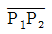
의 평면거리 S와 방향각 T는?- S=549.73m, T=129°27ʹ21ʺ
- S=452.44m, T=50°32ʹ40ʺ
- S=549.73m, T=309°27ʹ21ʺ
- S=452.44m, T=230°32ʹ40ʺ
(정답률: 48%)
92. 등고선의 특성에 관한 설명으로 옳은 것은?
- 최대 경사선은 등고선과 직각 방향이다.
- 높이가 다른 등고선은 어떠한 경우에도 겹치지 않는다.
- 등고선은 지도 안에서 폐합되지 않으면 지도의 밖에서도 만나지 않는다.
- 등고선의 간격이 넓을수록 급한 경사를 이른다.
(정답률: 53%)
93. 축척 1：5000 지형도에서 면적 8km2의 토지에 대한 도상면적은?
- 0.0032m2
- 0.032m2
- 0.32m2
- 32m2
(정답률: 62%)
94. 연속적인 측량이 가능한 토털스테이션을 사용하여 등고선을 측정하는 방법에 대한 설명으로 옳지 않은 것은?
- 측점으로부터의 기계고를 측정한다.
- 프리즘의 높이는 임의로 하여 수시로 변경하는 것이 편리하다.
- 토털스테이션을 추적모드(tracking mode)로 설정하고 측정할 등고선의 높이를 입력한다.
- 높이를 알고 있는 측점에 토털스테이션을 설치하거나, 기준점을 관측하여 측점의 높이를 결정한다.
(정답률: 70%)
95. 측량기본계획은 몇 년마다 수립하여야 하는가?
- 2년
- 3년
- 5년
- 10년
(정답률: 66%)
96. 우리나라 측량의 기준으로써 위치 측정의 기준인 세계측지계에 대한 설명으로 옳지 않은 것은?
- 지구를 편평한 회전타원체로 상정하여 실시하는 위치측정의 기준이다.
- 극지방의 지오이드가 회전타원체 면과 일치하여야 한다.
- 회전타원체의 단축이 지구의 자전축과 일치하여야 한다.
- 회전타원체의 중심이 지구의 질량중심과 일치하여야 한다.
(정답률: 56%)
97. 지도나 그 밖에 필요한 간행물(이하 “지도등”이라 표현)의 간행심사에 대한 설명으로 옳지 않은 것은?
- 기본측량 성과 등을 활용하여 지도등을 간행하여 판매하거나 배포하려는 자는 국토교통부장관의 심사를 받아야 한다.
- 지도 등을 간행하려는 자는 사용한 기본측량 성과 또는 측량기록을 지도등에 명시하여야 한다.
- 측량성과 심사수탁기관이 지도등의 심사를 할 때에는 도로, 철도 등 주요 지형ㆍ지물의 표시 등이 적정한지 여부를 심사한다.
- 심사를 받고 간행한 지도등을 수정하여 간행할 경우에는 수정간행한 지도의 사본제출 등의 절차를 생략할 수 있다.
(정답률: 52%)
98. 공공측량성과 심사수탁기관은 특별한 사유가 없는 한 성과심사 신청 접수일로부터 며칠이내에 심사결과서를 통지해야 하는가?
- 10일 이내
- 15일 이내
- 20일 이내
- 30일 이내
(정답률: 48%)
99. 측량업의 등록을 반드시 취소하여야 하는 경우에 해당되지 않는 것은?
- 다른 사람에게 자기의 측량업등록증 또는 측량업등록수첩을 빌려 주거나, 자기의 성명 또는 상호를 사용하여 측량업무를 하게 한 경우
- 정당한 사유 없이 측량업의 등록을 한 날부터 1년 이내에 영업을 시작하지 아니하거나 계속하여 1년 이상 휴업한 경우
- 거짓이나 그 밖의 부정한 방법으로 측량업의 등록을 한 경우
- 영업정지기간 중에 계속하여 영업을 한 경우
(정답률: 65%)
100. 공간정보를 체계적으로 정리하여 사용자가 검색하고 활용할 수 있도록 가공한 정보의 집합체로 정의되는 것은?
- 공간정보데이터베이스
- 국가공간정보통합체계
- 공간정보관리시스템
- 공간정보체계
(정답률: 59%)